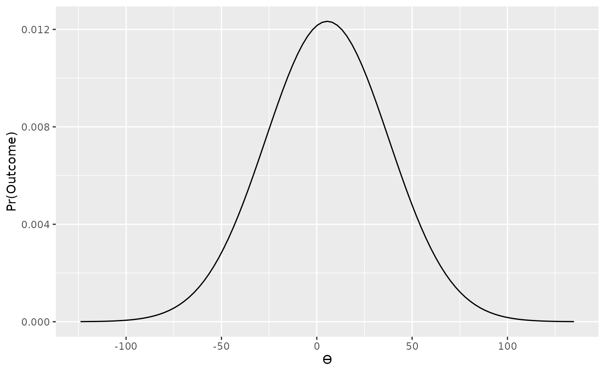
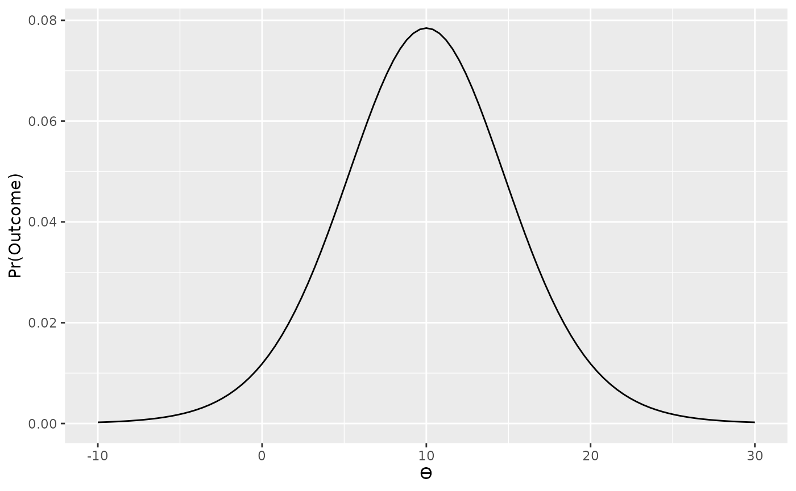
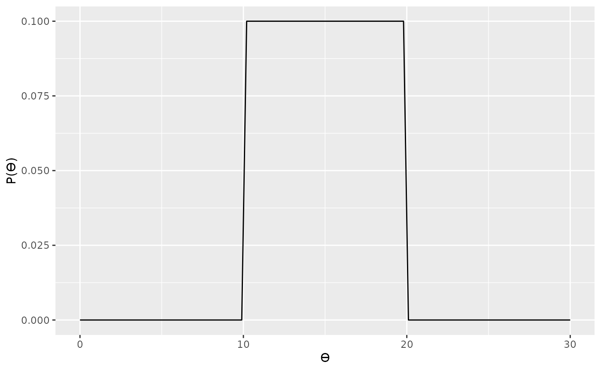
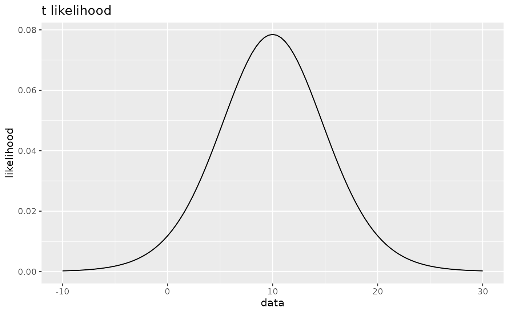
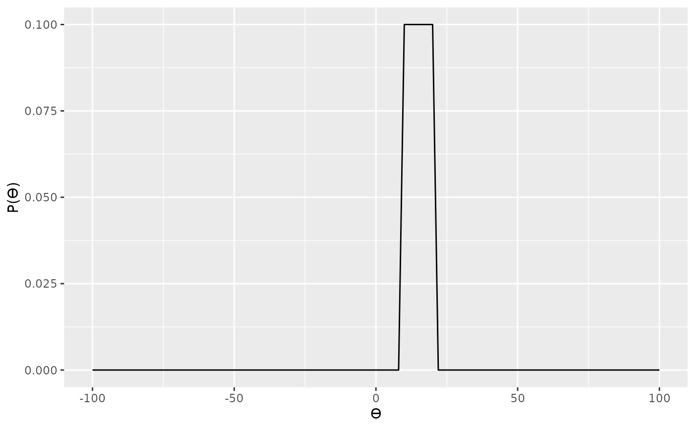
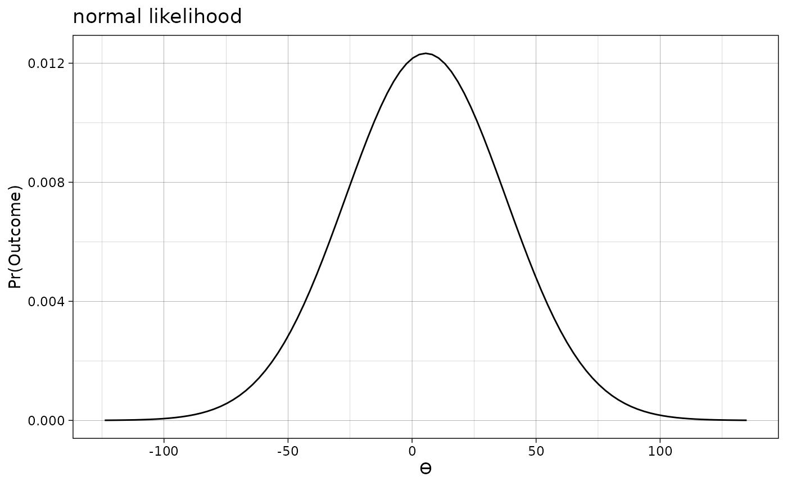
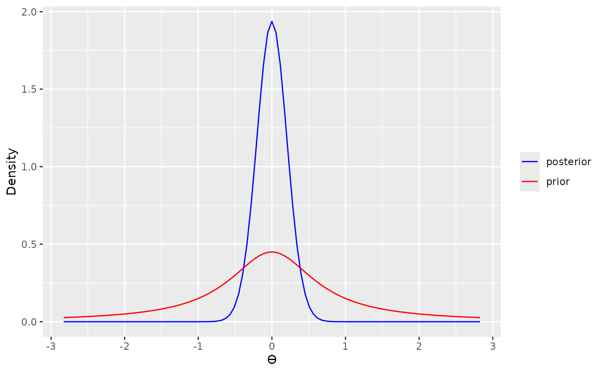
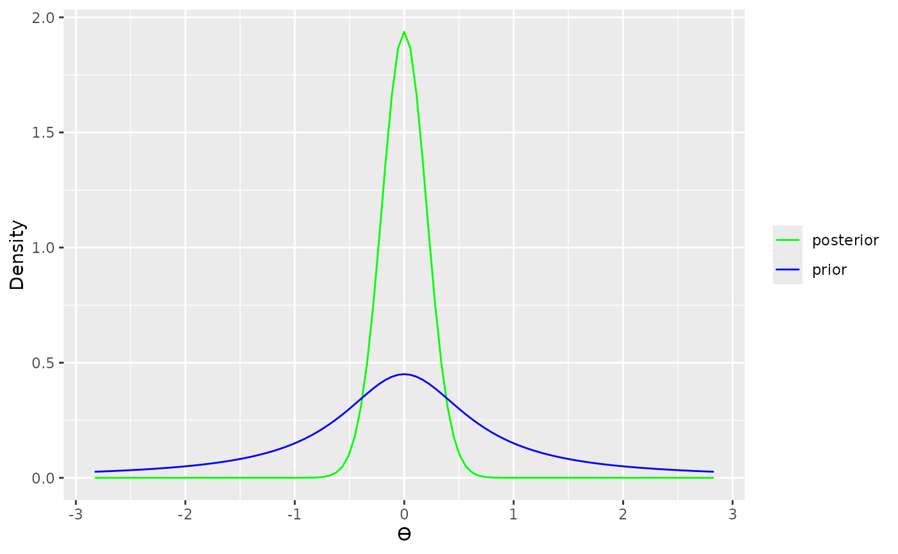
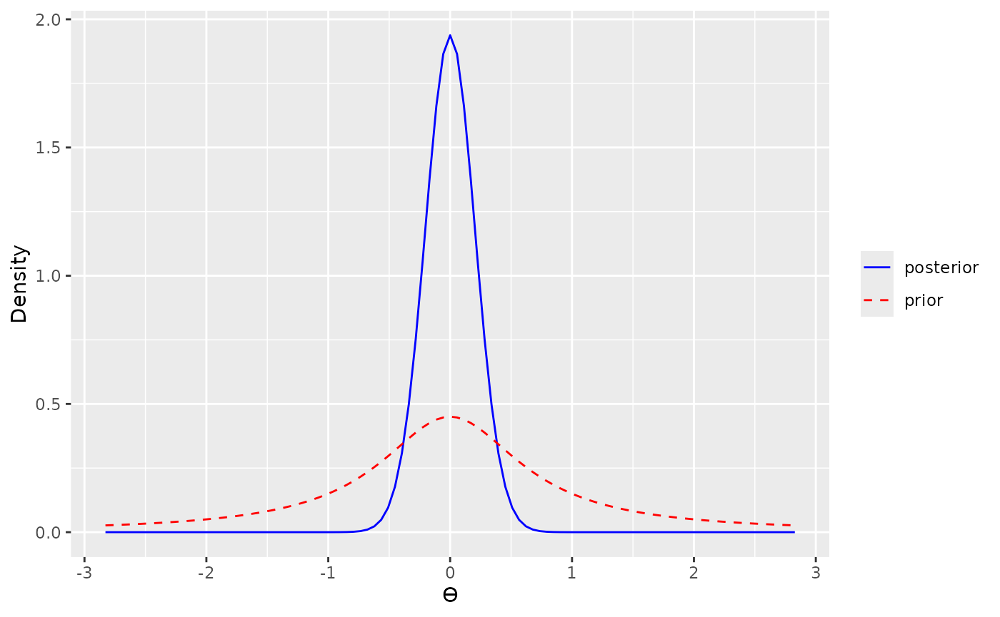
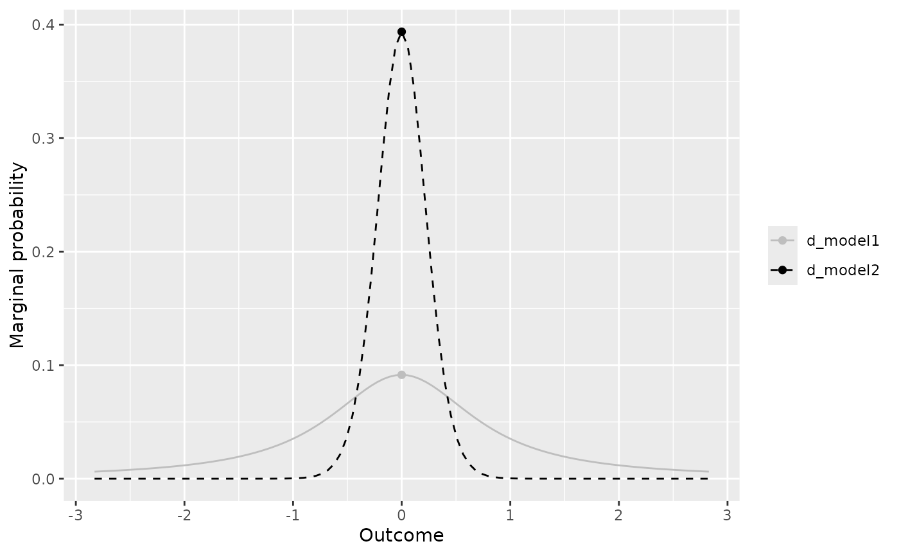

The bayesplay package includes functionality for basic
plotting of prior and likelihood objects. These plots are all generated
with the generic plot() function. The plot()
function returns a ggplot2 object. These plots are styled
with sensible defaults; however, they can be further styled using
standard ggplot2 syntax.
Examples
Plotting likelihoods
To plot a likelihood, you first need to define a likelihood using the standard syntax (see basic usage).
In the example below, we define normal likelihood with a mean of 5.5 and a standard error of 32.35.
norm_mod <- likelihood(family = "normal", mean = 5.5, sd = 32.35)
norm_mod
#> Likelihood
#> Family
#> normal
#> Parameters
#> mean: 5.5
#> sd: 32.35
#> To plot this object we just use it as the input to the
plot() function.
plot(norm_mod)
As shown above, default axis labels are applied to the x and y axis. The x-axis limits are also automatically set to so that the full shape of the likelihood is visible.
An identical approach can also be used for plotting t likelihoods. First we define the likelihood.
t_mod <- likelihood(family = "student_t", mean = 10, sd = 5, df = 15)
t_mod
#> Likelihood
#> Family
#> student_t
#> Parameters
#> mean: 10
#> sd: 5
#> df: 15
#> We can then plot the likelihood using the plot()
function.
plot(t_mod)
Plotting priors
The process for plotting priors is identical to plotting likelihoods. First we define the prior, and then we plot it. Sensible axis labels are applied to plots of priors.
For example, we can plot a point prior, typically used for a null model.
We can also plot a uniform prior.

Or a normal prior.
The plot() function also behaves sensibly with, for
example, half-normal priors. The height of the plot is scaled
appropriately, and the plot is only show over the appropriate parameter
range.
Styling plots
The plots produced by the plot() function are standard
ggplot2 objects and, therefore, they can be styled using
the standard ggplot2 syntax.
First, we load the ggplot2 package to gain access to
it’s styling functions.
The functions than then we used to modify the output for the
plot() function. For example, axis labels can be changed
with ggplot2::labs()

or axis limits can be changed using, for example,
ggplot2::xlim(). Note that because scales have already been
set by the plot() function, a warning message will be
produced. This however, this message can be suppressed using standard
R methods.
plot(uniform_prior) + xlim(-100, 100)
#> Scale for x is already present.
#> Adding another scale for x, which will replace the existing scale.
Or the plot can be themed using ggplot2 themes such as
ggplot2::theme_linedraw()
plot(norm_mod) +
labs(title = "normal likelihood") +
theme_linedraw()
Styling advanced plots
For the advanced plot types like the prior and posterior plots and the visual comparison (see Advanced usage) it is also possible to change the colours and the linetypes.
For example, the default colours for these plots are blue and red solid lines.
data_model <- likelihood("noncentral_d", d = 0, n = 20)
d_model1 <- extract_predictions(data_model * prior("cauchy", 0, .707))
d_model2 <- extract_predictions(data_model * prior("point", 0))
visual_compare(d_model1, d_model2)
plot(extract_posterior(data_model * prior("cauchy", 0, .707)), add_prior = TRUE)
However, it is possible to change this with
ggplot2::scale_colour_manual()
visual_compare(d_model1, d_model2) +
scale_colour_manual(
values = c("green", "blue"),
labels = c("d_model1", "d_model2"), name = "Model"
)
#> Scale for colour is already present.
#> Adding another scale for colour, which will replace the existing scale.
plot(extract_posterior(data_model * prior("cauchy", 0, .707)), add_prior = TRUE) +
scale_colour_manual(
values = c("green", "blue"),
labels = c("posterior", "prior"), name = NULL
)
#> Scale for colour is already present.
#> Adding another scale for colour, which will replace the existing scale.
It is also possible to change the linetype with
ggplo2::scale_linetype_manual(),
visual_compare(d_model1, d_model2) +
scale_linetype_manual(
values = c(1, 2),
labels = c("d_model1", "d_model2"), name = "Model"
)
#> Scale for linetype is already present.
#> Adding another scale for linetype, which will replace the existing scale.
plot(extract_posterior(data_model * prior("cauchy", 0, .707)), add_prior = TRUE) +
scale_linetype_manual(
values = c(1, 2),
labels = c("posterior", "prior"), name = NULL
)
#> Scale for linetype is already present.
#> Adding another scale for linetype, which will replace the existing scale.
or to change both the colour and the linetype.
visual_compare(d_model1, d_model2) +
scale_linetype_manual(
values = c(1, 2),
labels = c("d_model1", "d_model2"), name = NULL
) +
scale_colour_manual(
values = c("grey", "black"),
labels = c("d_model1", "d_model2"), name = NULL
)
#> Scale for linetype is already present.
#> Adding another scale for linetype, which will replace the existing scale.
#> Scale for colour is already present.
#> Adding another scale for colour, which will replace the existing scale.
plot(extract_posterior(data_model * prior("cauchy", 0, .707)), add_prior = TRUE) +
scale_linetype_manual(
values = c(1, 2),
labels = c("posterior", "prior"), name = NULL
) +
scale_colour_manual(
values = c("black", "black"),
labels = c("posterior", "prior"), name = NULL
)
#> Scale for linetype is already present.
#> Adding another scale for linetype, which will replace the existing scale.
#> Scale for colour is already present.
#> Adding another scale for colour, which will replace the existing scale.